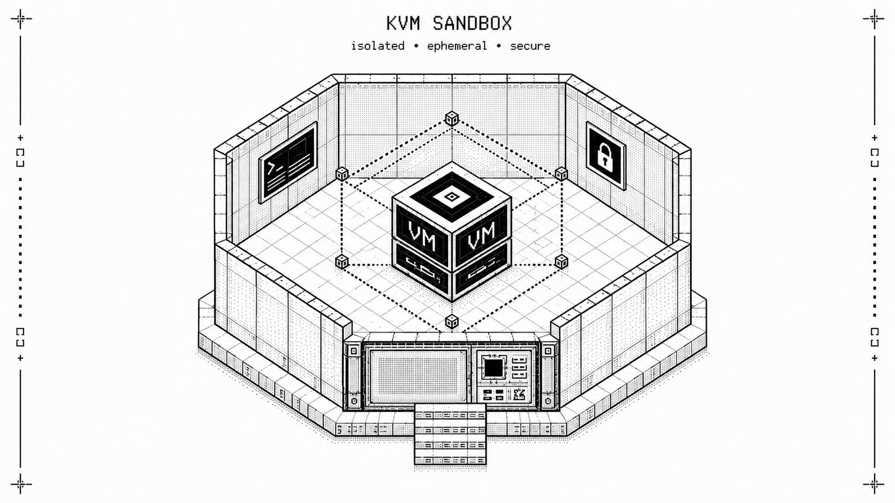

Inside SandBoxer's KVM isolation pipeline
How an experimental model-vs-model CTF benchmark keeps two capable LLM agents from escaping, colliding, or contaminating each other's evidence.
SandBoxer is an experimental benchmark where two LLM-driven competitors play opposite sides of a CTF-style match: one deploys and hardens a small web service (Blue), the other attacks it for a flag (Red). Both competitors are agentic coding CLIs with shell access on their own runner host. That combination is exactly why the isolation design matters more than the game: you have put two optimizers with tool use into a box, told them to win, and promised the audience that the resulting telemetry is real. This article walks through how the pilot's KVM isolation pipeline is actually built, file by file, in the repository. Every number and flag quoted below is taken from the code; links to specific files are given so you can check each claim yourself.
The threat model has three parts. Escape means that a competitor model should not be able to reach the orchestrator host, the other competitor's environment, or anything beyond the match. Interference means that during Blue phase the two runners must be fully network-separated, and that during Red phase they should exchange only TCP traffic to the declared toy service port and nothing else. Evidence integrity means that scores must come from machine-verified telemetry, not from a model's self-report about what it did.
There is also a fourth, quieter requirement: honesty about residual risk. The KVM adapter carries a class-level production_ready = False flag with the comment that local smoke tests "cannot establish adversarial escape resistance" (local_kvm.py). The design goal is containment that can be proven per-match, not a claim of unbreakability.
The repo ships two runner backends. In the Docker Compose tier, pilot/compose.yaml defines alpha and beta runners from docker/runner.Dockerfile. Each service gets a read_only: true root filesystem, with writable tmpfs at /tmp (noexec,nosuid,nodev,size=256m) and /run (nosuid,nodev, 32m), together with cap_drop: ["ALL"], privileged: false, and security_opt: ["no-new-privileges:true"], pids_limit: 192, mem_limit: 2304m, and cpus: 2.0, and restart: "no" so that nothing resurrects itself. The two runners are also kept apart at the network layer by two named internal networks, alpha_private and beta_private, both marked internal: true: alpha sits only on its own network and beta only on the other, so there is no shared bridge between panes at all.
The image itself (runner.Dockerfile) builds from python:3.11-slim-bookworm, creates a non-root user arena with uid 10001, bakes a pristine copy of the toy service into /opt/pristine, installs the entrypoint helpers as root-owned files, and ends with USER arena under tini as PID 1. On boot, runner-entrypoint.sh copies /opt/pristine/. into /arena/service if no service exists yet and calls arena-restart.
This tier is good enough for rehearsal loops. Its fundamental ceiling is shared kernel: every container on the host trusts one Linux kernel.
For matches where that matters, the KVM/QEMU tier is available: LocalKvmRunnerProvider boots each runner as a full virtual machine with hardware virtualization enabled, so the two competitors run distinct kernels. The preflight even asserts this: the distinct_kernels check compares guest boot_ids and fails with KERNEL_ISOLATION_LOST if both VMs report the same one.
Provisioning happens per match in LocalKvmRunnerProvider.provision(). For each of the two runners it creates a private directory tree under a match root with mode 0711 (owner traversal only) and a runner root with mode 0700 owned by a dedicated unprivileged QEMU user. The mode checks are re-read from disk after creation; any mismatch aborts provisioning with MATCH_ROOT_UNSAFE or QEMU_RUNTIME_DIRECTORY_UNSAFE.
The disk layout per runner consists of three images. The base image is one shared qcow2, pinned by a mandatory SHA-256 (base_image_sha256 is validated against [0-9a-f]{64} in LocalKvmConfig.__post_init__) and attached readonly=on,cache=none. The workspace is a fresh 64 MB qcow2 created per runner via qemu-img create -f qcow2 ... 64M, attached read-write with discard=unmap; it is disposable, and nothing persists between matches. The seed is a cloud-init ISO built with cloud-localds, carrying per-runner identity including a fresh 32-byte hex nonce.
Resource limits are enforced twice: inside the guest configuration and again on the host via cgroup v2. Defaults are deliberately tight, and the config validator refuses looser ones: memory_mib must be at least 256 (scripts use 512 MiB), vcpus must equal 1, pids_max must be at least 32 (default 128), and ttl_seconds must be at least 30 (default 300). The host cgroup under /sys/fs/cgroup/sandboxer gets memory.max = memory_mib * 1024 * 1024, cpu.max = "100000 100000" (one CPU's worth), and the pids cap; membership is verified after attach, not assumed.
The QEMU command line is where the interesting flags live:
ip netns exec <blue_ns> setpriv --reuid=<qemu_user> --regid=<qemu_user> --init-groups \
qemu-system-x86_64 -enable-kvm -cpu host -m <mem> -smp 1 \
-nodefaults -display none -monitor none -serial file:<serial.log> -no-reboot \
-sandbox on,obsolete=deny,elevateprivileges=deny,spawn=deny,resourcecontrol=deny \
-drive file=<base.qcow2>,if=virtio,format=qcow2,readonly=on,cache=none \
-drive file=<workspace.qcow2>,if=virtio,format=qcow2,cache=none,discard=unmap \
-drive file=<seed.iso>,media=cdrom,readonly=on -nic none \
-netdev tap,id=arena0,ifname=<tap>,script=no,downscript=no \
-device virtio-net-pci,netdev=arena0,mac=<mac> \
-device virtio-serial-pci \
-chardev socket,id=control,path=<control.sock>,server=on,wait=off \
-device virtserialport,chardev=control,name=org.sandboxer.controlSeveral pieces of that command line deserve attention. setpriv --reuid/--regid/--init-groups means QEMU itself runs as the unprivileged user, not root, inside the network namespace; before launch, a forked witness child drops to that same uid and proves it can create and unlink a probe file in the runtime directory, and failure produces QEMU_SOCKET_WITNESS_* errors rather than a hopeful start. The QEMU sandbox flags -sandbox on,obsolete=deny,elevateprivileges=deny,spawn=deny,resourcecontrol=deny disable obsolete syscalls, privilege escalation, helper process spawning, and resource-control operations from within the VMM process. With -nodefaults, no monitor, no display, and -no-reboot, the monitor is disabled entirely, and serial output goes to a log file whose stderr capture is sanitized (sensitive-looking assignments are redacted, absolute paths replaced) before it ever reaches diagnostics. The control channel travels over virtio-serial rather than IP: the chardev Unix socket control.sock lives in the runner root and speaks to a control server in the guest over org.sandboxer.control, with responses bounded by MAX_TOOL_MESSAGE_BYTES and ASCII-validated.
Cleanup is fail-closed. If provisioning or teardown cannot prove destruction of every artifact (process, cgroup, TTL unit, tap, namespaces, directories), the record moves to a QUARANTINED state tracked in _partials, and reconcile() retries later, reporting named failures like QEMU_PROCESS_SURVIVED or CGROUP_REMAINS. A systemd transient timer (systemd-run --on-active) armed per runner kills the verified cgroup if the orchestrator itself dies; the watchdog validates PID plus start time before acting.
Blue phase needs total separation; Red phase needs controlled contact. The design therefore uses both Linux network namespaces and a bridge firewall, applied in that order of authority. During Blue, each runner gets its own namespace (ip netns add), containing only loopback up and its own tap device; there is no bridge in Blue at all. The authoritative check reads default routes from each Blue namespace: any non-empty route output means egress capability, and observation reports the runners as reachable. Guest-side witnesses confirm the same thing from inside the VM.
When the match moves to Red, taps move into a single shared red namespace and attach to a bridge there. Before the first tap can join, however, _install_red_policy() applies a complete nftables table in one transaction:
add table bridge sandboxer # or flush if it already exists
add chain bridge sandboxer forward { type filter hook forward priority 0; policy drop; }
add counter ... arp_left / arp_right / tcp_left / tcp_right / response_left / response_right
accept rules: ARP either direction,
TCP dport <toy_service_port> left->right and right->left,
TCP sport <port> with ACK|RST flags (responses),
ct state established,relatedEverything else hits policy drop. Because nft applies the whole table atomically and the policy is installed before any tap attaches, there is no delete-then-open window where the two runners could talk unrestricted. Counters on each rule give per-direction evidence of what actually flowed.
Verification does not stop at reading the ruleset back. _measure_network() re-checks the live table for the expected strings (policy drop, ether type arp, tcp dport <port>, both tap names), confirms the red bridge has no addresses and the red namespace has no default route (no ingress, no egress), and then runs active reachability proofs through the control channel. If any witness is unavailable, the result is a failure, never an inference of safety: "an unavailable witness is unsafe by definition."
Runner addressing is fixed: guests come up at 10.77.0.11 and 10.77.0.12/24 via cloud-init network config, and the scripts declare port 8080 (toy_service_port=8080) as the toy service port. MAC addresses derive deterministically from the match id and runner name under the locally-administered 02: prefix.
Inside each guest, RunnerToolServer (runner_tool_server.py) exposes a small, finite tool protocol over a private Unix socket, chmod 0600, with messages capped at 64 KiB. Authorization is a strict whitelist keyed by phase:
_PHASE_TOOLS = {
"blue": {"inspect_service", "deploy_service", "request_own_service", "finish_phase"},
"red": {"inspect_service", "describe_target_service", "http_request",
"submit_flag", "finish_phase"},
}Dispatch order matters: unknown tools get RUNNER_TOOL_DENIED; known tools outside the current phase get RUNNER_TOOL_PHASE_DENIED; argument shape mismatches get RUNNER_TOOL_ARGUMENTS_INVALID. Argument validation is exact-set matching (deploy_service accepts precisely the nine _SERVICE_SPEC_FIELDS; HTTP tools accept exactly {method, path, headers, body}, GET/POST only, path starting with /, values capped at half the message limit).
Every decision, allowed or denied, becomes a ToolDecision passed to the audit callback before execution. An optional max_tool_calls ceiling counts calls in a locked section; once exceeded, everything except finish_phase returns RUNNER_TOOL_CEILING_EXCEEDED.
On the model side, the Command Code adapter (command_code.py) mirrors this boundary. The coding CLI's workspace gets a generated .commandcode/settings.json with permissions.defaultMode: "dont-ask", an explicit allow list of mcp__runner__<tool> entries for exactly the whitelisted phase tools, and a deny list of native tools; .mcp.json wires the runner MCP bridge over stdio with SANDBOXER_RUNNER_SOCKET and SANDBOXER_RUNNER_TOOLS env vars. Post-run validation then rejects any native tool event that was not explicitly allowed (COMMAND_CODE_NATIVE_TOOL_REJECTED), verifies the observed model matches the requested one, and enforces the output token budget.
Scores are computed from hash-chained telemetry, not from narrative. In evidence.py, each normalized event carries previous_event_hash and event_hash (SHA-256 over canonical JSON), starting from a zero chain; verification recomputes the chain and rejects duplicate event ids, broken linkage, or mismatched sealed raw event hashes. Evidence bundles add their own provenance spine: versioned URLs (sandboxer://evidence/<series>/v<n>), the previous bundle's hash, checksums over public and restricted payloads, and a signature. The public projection gets its own independent chain. A report consumer can therefore prove that the published outcome derives from the same events the match produced.
Three limitations are stated in the code rather than hidden. First, production_ready = False: the adapter's own docstring says it plainly, "a successful rehearsal proves only the configured containment checks, not resistance to a hostile workload," and until someone documents adversarial red-teaming against this pipeline, that flag stays down, and the benchmark's operators treat it accordingly. Second, the container tier shares a kernel: the Docker rehearsal tier inherits all container-isolation caveats, so it is for iteration, not for claims about escape resistance, and the VM tier exists because of that gap. Third, scope: this pipeline contains the runners' execution environments and the network between them, but it does not defend against prompt-injection content inside the CTF materials themselves, side channels between VMs on the same physical host, or compromise of the privileged orchestrator, which remains a trusted component running SubprocessLocalKvmHost on the host.
If you are evaluating whether to trust this isolation, the right move is to read it yourself: the introductory paper describes the benchmark methodology, and the full source is public. Start with pilot/sandboxer_v0/local_kvm.py and try to find a hole; the code is written to make your audit cheap.
The full source is in the repository: pilot/sandboxer_v0/local_kvm.py. The benchmark methodology and evidence model are described in the introductory paper.